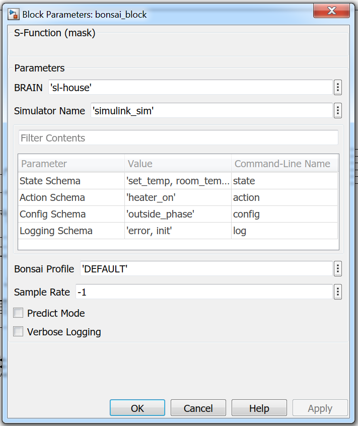

Simulink Overview

Simulink, developed by MathWorks, is a graphical programming environment for modeling, simulating and analyzing multi-domain dynamical systems. Simulink is one of the environments (simulators) you can use to train a BRAIN on the Bonsai Platform. We’re supporting a wide range of control and optimization use cases. Please review our Simulator requirements guide to determine whether your model will be trainable on the Bonsai Platform.
This tutorial will walk you through how to setup a project using the Bonsai Simulink Adapter and running the cartpole demo. Installing MATLAB/Simulink is not covered in this tutorial, as it is targeting existing users of Simulink who have previous experience with the software. As of this writing, we provide support for only the latest version of MATLAB/Simulink.
Approach
MATLAB/Simulink offers a variety of mechanisms for incorporating custom code into Simulink models. Each has its advantages and disadvantages, but the C MEX S-Function is both the most performant and offers the most flexible access to model internals. S-functions of this kind exist as shared libraries, native to the host system and implementing a callback interface which is consumed by the Simulink runtime.
To implement the S-Function callback interface, we use libbonsai, a C++ library which exposes a high level API around the Bonsai platform’s network protocol. In this way, we allow the Simulink model to “drive” libbonsai‘s internal event loop, passing states and actions back and forth between the Simulink runtime and the Bonsai backend.
Setup Your Project
Install the Bonsai CLI and SDK
If you haven’t yet done development on the Bonsai Platform before this, please follow our guide to Install the CLI. This guide will walk you through any prerequisites you may need and then you can come back to this tutorial to install the SDK.
If you are using Windows, the contents of the Bonsai Toolbox will get you up and running with the SDK. If using Mac OS or Linux, you will first need to install libbonsai.
Mac OS
If you haven’t already, you can use homebrew to install libbonsai as follows:
$ brew tap BonsaiAI/homebrew-bonsai
$ brew install bonsai
This may take awhile as homebrew resolves any additional dependencies that may be missing from your system.
Linux (Experimental)
For Linux (we’ve tested on Ubuntu 16.04), you’ll need to install libbonsai from source. To get started, clone the most recent release as follows:
$ git clone https://github.com/BonsaiAI/libbonsai.git
You’ll find detailed instructions for building libbonsai in libbonsai/libbonsai/how-to-build/BUILD-Ubuntu.md.
NOTE: The document listed above may be easier to read if you view it on github.
Skip directly to the section titled “Build with Static Dependencies” and follow the instructions therein. This may take awhile. Seriously. Go get a cup of coffee.
Once everything is done building, you’ll need to install the library by typing sudo make install form the build directory.
Install the Bonsai Toolbox

Currently, while the Bonsai Toolbox is in beta, you will need to contact support@bons.ai for access to the Bonsai Toolbox archive that corresponds to your development platform.
To install the Toolbox for your default MATLAB/Simulink version simply double click on the toolbox installer (.mltbx) and follow the prompts that appear on your screen. When this is done, you’re ready to go! Move on to the next steps, where you’ll train a Bonsai BRAIN to control a model of a home HVAC unit.
At its core, the Bonsai Toolbox is driven by a Level 2 C-MEX S-Function exposing a native binary interface to the Simulink runtime. When you install the Toolbox, both a MEX file and the source code that produced it will be installed to your MATLAB path.
Create Your BRAIN
$ cd /path/to/simulink-househeat
$ bonsai create sl-house
$ bonsai push
Create your BRAIN (and its related project file) with bonsai create and give it a name. We used sl-house in the example code but you can name it whatever you’d like. You will view your BRAIN’s training progress on the BRAIN’s Details page which can be found on the BRAIN dashboard.
Next, use bonsai push to upload the cloned househeat project and its associated files to the Bonsai AI Engine for training.
Configure Simulink Adapter

A full description of every field found in the Block Parameters window is at the end of this tutorial for reference.
- Start MATLAB/Simulink
- Open the example model “simulink_househeat.slx”
- Double click the bonsai block.
- Fill in the
BRAINfield with the name of the BRAIN you just created. If you used the name suggested by this document, that should already be reflected in theBRAINfield. - Make sure your Bonsai profile is filled in. If you haven’t changed your profile before this will be
DEFAULTas shown in the image. - Leave the rest of the fields as-is.
Here is an example of bonsai_block:

Train Your BRAIN
Almost there! Time to tell the Bonsai AI Engine to prepare a new BRAIN version for training. Follow the commands to start training on the Bonsai Platform before you do anything in Simulink.
$ cd /path/to/simulink-househeat
$ bonsai train start
Then, in Simulink, make sure to accept any changes you may have made to the block configuration, save your model, and click Run. This will connect the simulation up to the Bonsai AI Engine and start providing data to the BRAIN.
In concept, what we have now is a Bonsai BRAIN that aims to keep the inside temperature of the “house” within a comfortable range while the “outside” temperature varies as a sinusoid over the course of the “day”. The control signal is a single bit, indicating whether the heater inside the house should be ON or OFF at a given time step. You can observe the dynamics of this process (and the resulting predictions) through the various oscilloscopes scattered throughout the model.
View your BRAIN training status

Navigate to the Bonsai web interface and select the BRAIN you’ve created from the Dashboard. You may see a blank training graph and a message indicating that the selected BRAIN is awaiting simulation data if your simulation connection is slow. As soon as Simulink has finished connecting to the Bonsai AI Engine you will be able to confirm that data is flowing from your Simulink model with the Simulation tab of the graph. You can also confirm this by checking that episode rewards are being logged to the Simulink diagnostic window (example shown).
Stop Training
After around 30,000 episodes (or about 300,000 iterations), you should see the training graph level off at a reward of between 200 and 220. At this point you can stop your Simulink model within Simulink and prepare for prediction using the CLI.
bonsai train stop
Signal to the Bonsai AI Engine that you are done with this version of the BRAIN you just trained by running bonsai train stop in the CLI.
Predict with Your BRAIN

After your BRAIN is finished training it will be able to run through a simulation of househeat, choosing what to do when the temperature changes. How well it does depends on how long you let it train!
To enable prediction mode in Simulink, simply double click the Bonsai block in your model, check the Predict box, click ok, and Run the model again. As long as your BRAIN is stopped (you can confirm this by running bonsai list at the command line and looking for the entry corresponding to your trained BRAIN), it should immediately start serving predictions to your model. You can see this reflected either in the diagnostic window (by observing episode rewards of approximately the reward converged upon by your training session) or in the various oscilloscopes littered throughout the example model.
The scope in the upper right of the model labelled “BLOCK OUTPUT AND STATE” can be particularly useful in observing the dynamics of the model under Bonsai’s control. Try zooming in on the plot horizontally, using two Reset pulses as your boundaries.
Model Integration
The Bonsai Block
The Bonsai Block exposes 3 input ports for drawing data from the enclosing model:
- The state of the model, corresponding with the state schema defined in Inkling and that used to configure the block (see Block Parameters, below). This will usually comprise several values that should be multiplexed into a flat, numeric vector before hitting the block input port
- The reward relative to the current state in the form of a single real number. E.g.
room_temp < abs(set_temp - 10) - The boolean result of applying your chosen terminal condition to the current state. E.g.
reward < 0.
Similarly, the Bonsai Block exposes 3 output ports for communicating data back to the enclosing model:
- The prediction to be applied to the enclosing model in response to the given state. That is, the action recommended by the BRAIN given the current state of its associated neural net. This takes the form of a numeric array. If the
Prediction Schemacontains more than one item, you will need a demux to extract them as individual signals. - The configuration parameters. As above, these are emitted as a numeric vector which may or may not need demuxing.
- The reset signal. This signal goes high either on the iteration following a terminal condition or when a training BRAIN updates configuration parameters as a way to avoid local optima. In practice, the former is the type of reset signal you will see the most frequently. For more information about responding to Reset signals, see the section titled “Resetting Your Model”.
Block Parameters
Access the Bonsai S-function parameter dialog by double clicking the corresponding block in the model.
Block configuration fields should contain valid MATLAB and will be evaluated as such. “Char Array” indicates a native MATLAB type denoted by enclosing a string of characters in single quotes. If you use double quotes or leave out the quotes all together, Simulink will complain when Apply your changes.
Schema fields (see below) represent lists of properties, log flags, etc. In order to support the widest possible variety of platforms and MATLAB/Simulink versions, we configure such fields as character arrays with list elements delimited by commas, semicolons, or single spaces (or any combination thereof. For example, any of the following are valid schemas:
‘field1;field2;field3’
‘field1, field2, field3
‘field1;;field2;, field3,,,field4’
NOTE: with the exception of the log schema, which has no analog in Inkling, the schemas you configure here must precisely match those defined in you Inkling file. Failure to maintain a precise match may cause MATLAB to crash.
| parameter | type | description |
|---|---|---|
BRAIN |
Char Array | The name of the BRAIN (as reflected in the Bonsai web interface). |
Simulator Name |
Char Array | As defined in the Inkling file associated with the target BRAIN. |
State Schema |
Char Array | As defined in the Inkling file associated with the target BRAIN. |
Action schema |
Char Array | As defined in the Inkling file associated with the target BRAIN. |
Config Schema |
Char Array | As defined in the Inkling file associated with the target BRAIN. |
Log Schema |
Char Array | A list of log domains to enable. |
Bonsai profile |
Char Array | Select header from global Bonsai config. If left blank (i.e. empty single quotes, as in ’’), configuration will reflect whichever profile has been selected in the Bonsai CLI. |
Sample rate |
Numeric | Either use a float to set the sample rate for the block or -1 for inherited sample time. |
Predict Mode |
Check Box | Indicates whether the block should connect to the BRAIN in predict mode (will fail if BRAIN training is not stopped). |
Verbose Logging |
Check Box | When checked, the block’s internal log messages are printed to the MATLAB debug console. |
Guidance for Terminal Conditions and Reward Functions
Both the terminal and reward functions for your training session should be implemented in Simulink and should be included in your model. The reward input on the Bonsai block expects a Numeric type, while the terminal input expects a boolean.
For more information on how to construct reward functions and terminal conditions see Constructing Reward Functions in our Programming Machine Teaching guide.
In the example models, we use the following pattern:
- Implement your reward function in pure MATLAB, and enclose it in a MATLAB Function block.
- Implement your terminal condition using whatever means you find most convenient. If your terminal condition depends on the value of your reward function split the output of the reward block, sending one copy to the Bonsai block and the other to your terminal condition logic.
- Send the terminal condition to the Bonsai block.
Customer Model Integration
Resetting Your Model
The Bonsai Block is designed to run in a feedback loop with your Simulink model. The Block Responds to the state, terminal, and reward conditions of its environment by sending those data to the Bonsai backend, which returns a suggested action based on the current state of the RL model it encapsulates.
The terminal condition for a particular model is entirely at the discretion of the end user. It lets the BRAIN know when a particular state is outside the bounds of useful operation. The implications of this in the context of Reinforcement Learning and Bonsai’s implementation in particular are many, but the important thing to remember is that the environment should be reset to a well-known set of default values after every terminal condition. In normal operation, the Reset output port on the Bonsai Block should go high on the major time step immediately following a rising edge on the Terminal input port. The next major time step will contain the first action applied to the resulting initial state.
In the case of the Househeat model, this is fairly straightforward. We pass the reset signal into our plant, and distribute it to the various integrators therein to reset the model to a state functionally identical to that immediately following model initialization.
As we progress with our own experiments (and receive feedback about yours) we will continue to build a collection of verified model integration patterns and use cases.
Controlling Action Frequency
In standard operation, the Bonsai Block operates in a 1:1 feedback loop with the enclosing model, which is to say that each major time step triggers the block to transfer the current state of the model to the Bonsai backend and request a prediction in return.
Some use cases may require that the ratio of state transfers to major time steps be less than 1:1. In these cases, we recommend placing the Bonsai Block inside a Triggered Subsystem. This way, your model can explicitly indicate when it requires an action from the Bonsai platform. For an example of this workflow, see the Engine Model included alongside the toolbox archive.